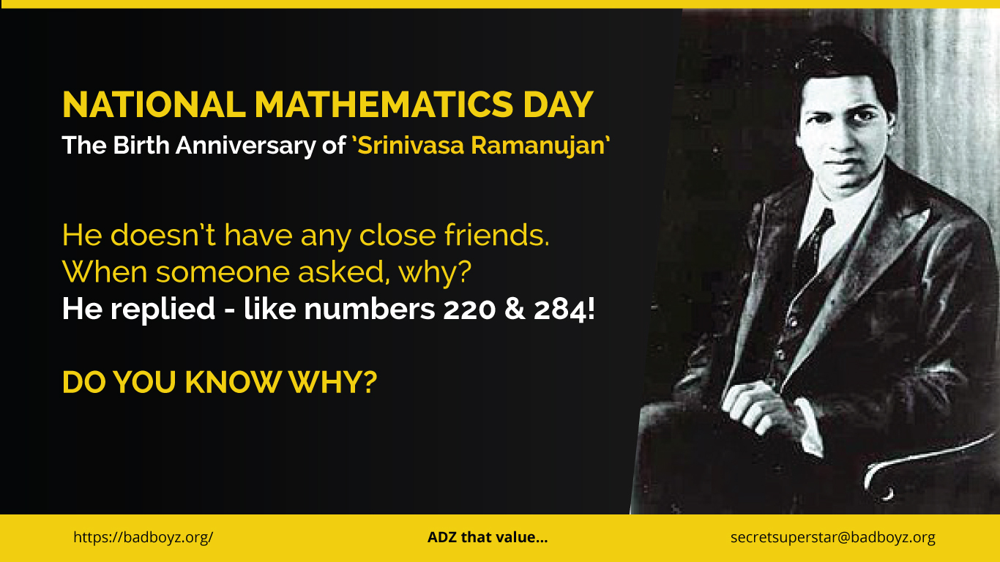
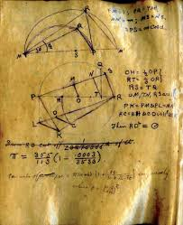
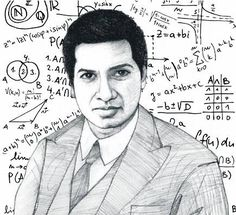
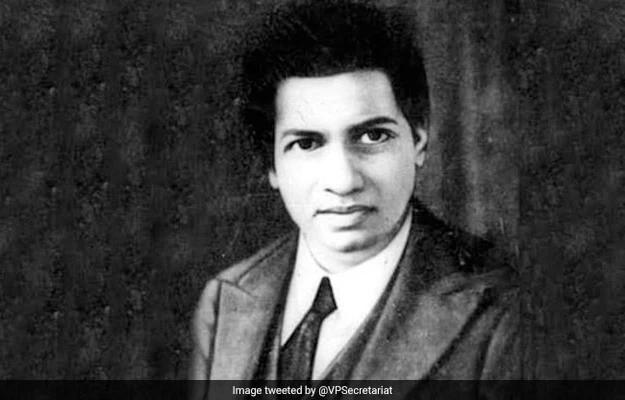
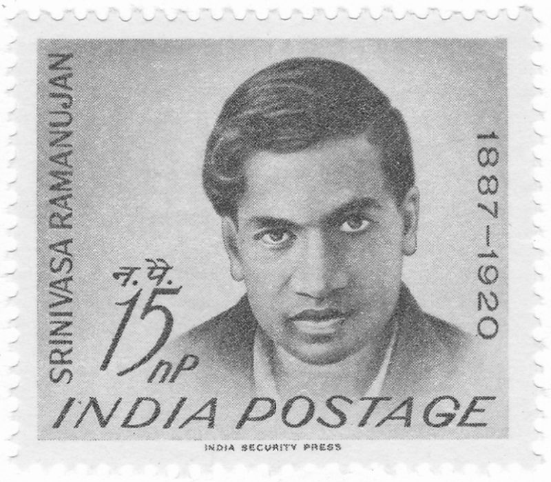
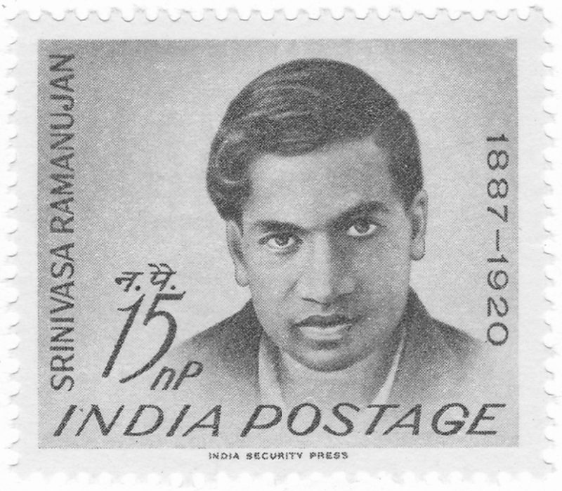
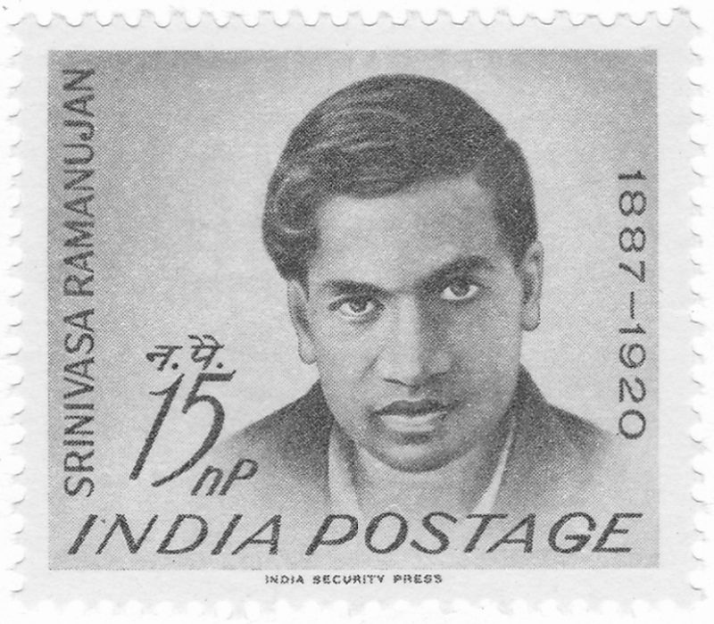
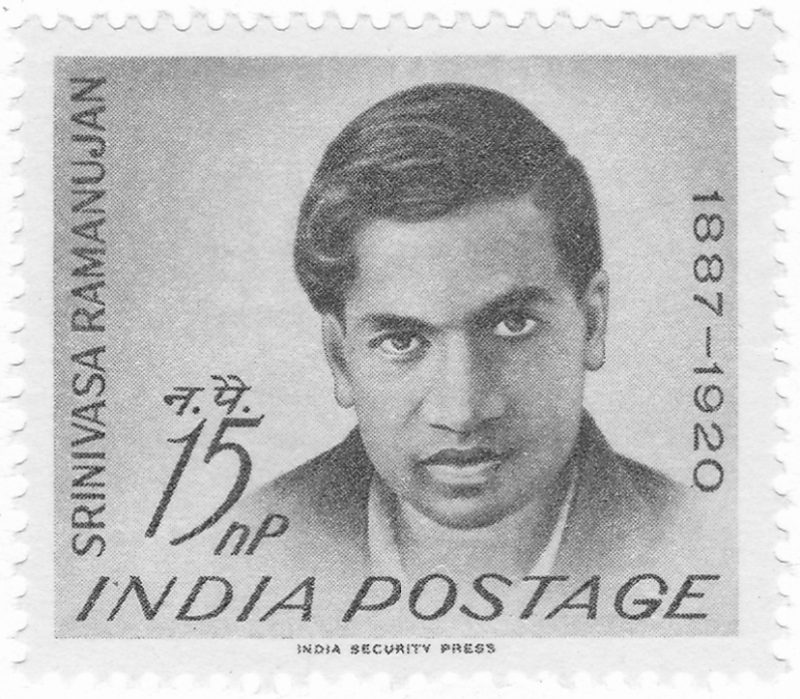

 


The Mathematics Day
Srinivasa Ramanujan

About

బాల్యం కుంబకోణంలోని సారంగపాణి వీధిలోని రామానుజం నివసించిన ఇల్లు రామానుజన్ డిసెంబర్ 22, 1887 నాడు తమిళనాడు రాష్ట్రం లోని ఈరోడ్ పట్టణములో ఆయన అమ్మమ్మ ఇంట్లో జన్మించాడు.[1] రామానుజన్ తండ్రి కె శ్రీనివాస అయ్యంగార్ ఒక చీరల దుకాణంలో గుమస్తాగా పని చేసేవారు. ఈయన తంజావూరు జిల్లాకి చెందిన వారు. తల్లి కోమలటమ్మాళ్ గృహిణి, ఆ ఊరిలోని గుడిలో పాటలు పాడేది. వీరు కుంభకోణం అనే పట్టణంలో, సారంగపాణి వీధిలో, దక్షిణ భారతదేశ సాంప్రదాయ పద్ధతిలో నిర్మించబడ్డ ఒక పెంకుటింట్లో నివాసం ఉండేవారు. ఇది ఇప్పుడు మ్యూజియంగా మార్చారు. రామానుజన్ ఒకటిన్నర సంవత్సరాల వయసులో ఉండగా ఆయన తల్లి సదగోపన్ అనే రెండో బిడ్డకు జన్మనిచ్చింది. కానీ మూడు నెలలు పూర్తవక మునుపే ఆ బిడ్డ కన్నుమూశాడు. డిసెంబర్ 1889 లో రామానుజన్ కు మశూచి (అమ్మవారు) వ్యాధి సోకింది. కానీ తంజావూరు జిల్లాలోని ఈ వ్యాధి సోకి మరణించిన చాలామంది లాగా కాకుండా బ్రతికి బయట పడగలిగాడు. తరువాత రామానుజన్ తల్లితోపాటు చెన్నైకి దగ్గరలో ఉన్న కాంచీపురంలో ఉన్న అమ్మమ్మ వాళ్ళింటికి చేరాడు. 1891లో మళ్ళీ 1894 లో రామానుజన్ తల్లి ఇరువురి శిశువులకు జన్మనిచ్చినా ఏడాది తిరగక మునుపే వారు మరణించడం జరిగింది.
Ramanujan's notebooks Further information: Ramanujan's lost notebook While still in Madras, Ramanujan recorded the bulk of his results in four notebooks of looseleaf paper. They were mostly written up without any derivations. This is probably the origin of the misapprehension that Ramanujan was unable to prove his results and simply thought up the final result directly. Mathematician Bruce C. Berndt, in his review of these notebooks and Ramanujan's work, says that Ramanujan most certainly was able to prove most of his results, but chose not to. This may have been for any number of reasons. Since paper was very expensive, Ramanujan would do most of his work and perhaps his proofs on slate, and then transfer just the results to paper. Using a slate was common for mathematics students in the Madras Presidency at the time. He was also quite likely to have been influenced by the style of G. S. Carr's book, which stated results without proofs. Finally, it is possible that Ramanujan considered his work to be for his personal interest alone and therefore recorded only the results.[73] The first notebook has 351 pages with 16 somewhat organised chapters and some unorganised material. The second has 256 pages in 21 chapters and 100 unorganised pages, and the third 33 unorganised pages. The results in his notebooks inspired numerous papers by later mathematicians trying to prove what he had found. Hardy himself wrote papers exploring material from Ramanujan's work, as did G. N. Watson, B. M. Wilson, and Bruce Berndt.[73] In 1976, George Andrews rediscovered a fourth notebook with 87 unorganised pages, the so-called "lost notebook".[61]